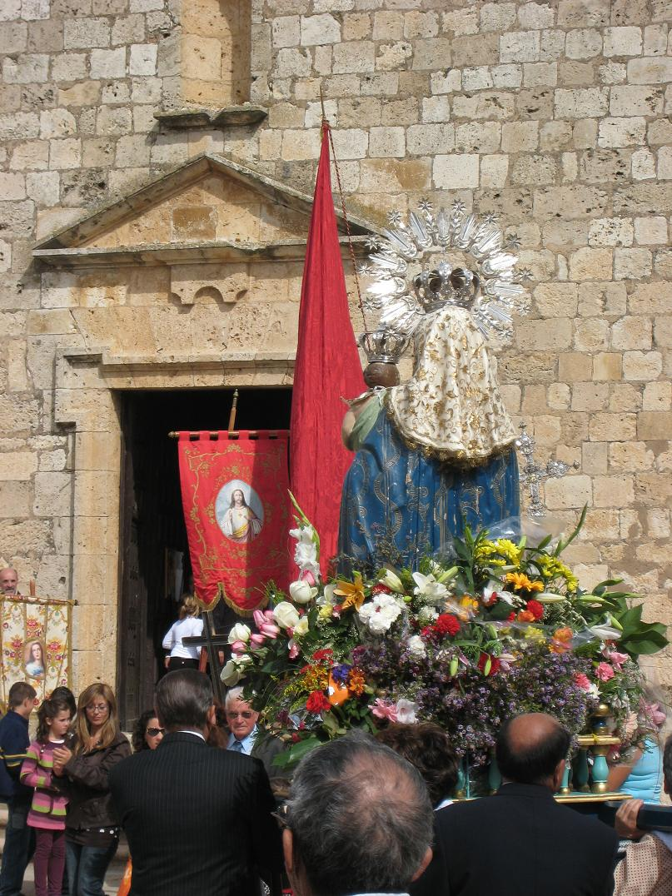
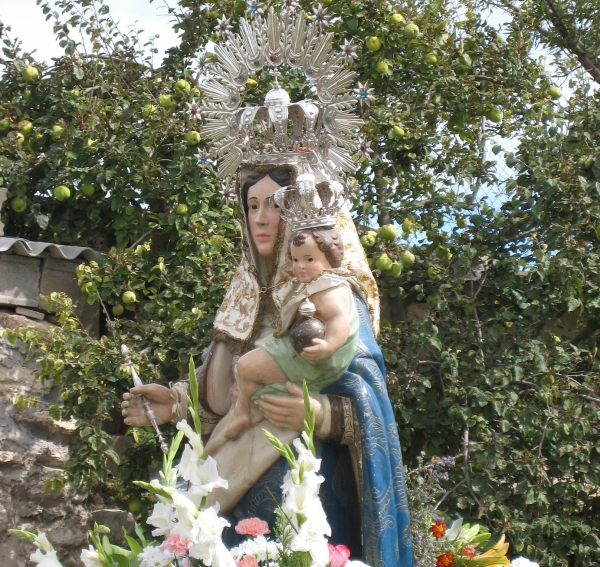
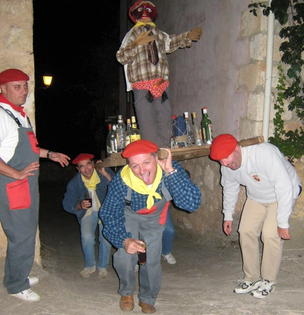
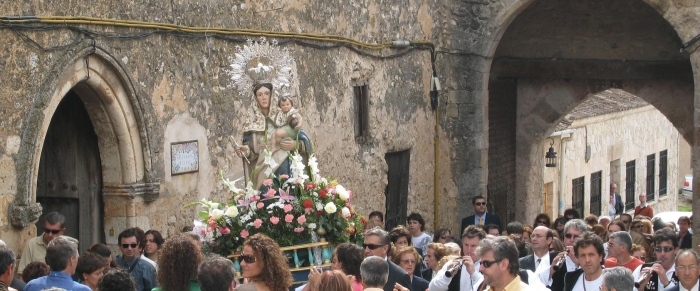
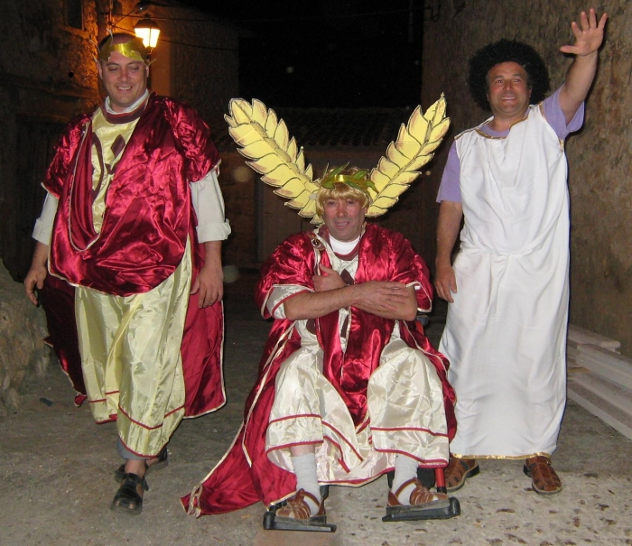
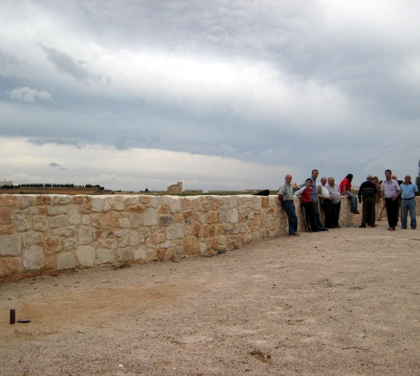
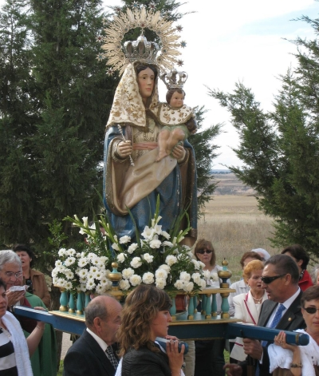
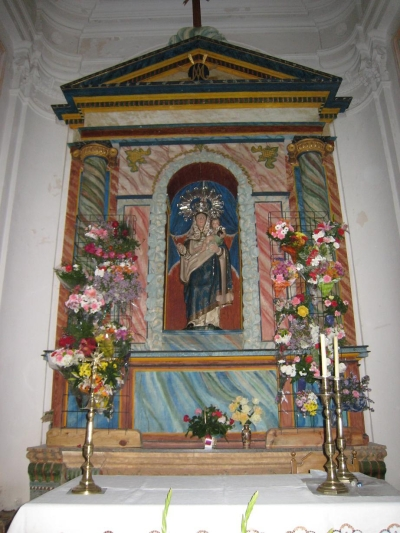

|
|
|
|
|
|
LA CORPORACIÓN MUNICIPAL LES DESEA ¡ FELICES FIESTAS ! 
NOTA: LA ORGANIZACIÓN SE RESERVA EL DERECHO DE MODIFICAR, SUPRIMIR O ALTERAR TOTAL O PARCIALMENTE CUALQUIERA DE LOS ACTOS PROGRAMADOS CON ANTERIORIDAD. |
|
|  | |
|
SALUDO DEL ALCALDE Llegadas estas fechas, aflora en nosotros el amor a nuestra Patrona y a nuestros seres queridos y amigos que otros años pasados nos dejaron recuerdos entrañables. Me gustaría que este año haya también amor y felicidad, para que en años venideros sean recordados. Dentro de todos los actos que hacemos en honor a nuestra Patrona Virgen de Castroboda, pidámosla también por nuestro pueblo, que nos ha visto nacer en muchos casos, y por que nos tiene como hijos muchos otros. Me gustaría que en los rezos a nuestra Patrona, la pidamos también porque no falte trabajo y aumente la prosperidad, y porque no se deteriore la unidad de España que tantos vínculos tenemos todos en ella. Agradezco las aportaciones económicas y el trabajo desinteresado de aquellas personas que con ilusión hacen por Maderuelo en todos sus eventos. Deseo a todos los que estamos y a los que vengan a visitarnos ¡Felices Fiestas!
EL Alcalde. D. Santiago Bayo Martín. |
|
|
VIERNES 26 DE SEPTIEMBRE
23:30h. Procesión de San Teolín. El santo recorrerá las calles de la Villa acompañado de sus devotos y devotas bailando al son de dulzaina y tamboril. 01:00h. Baile en la plaza con D. J. Juan Luis. Cortesía de la asociación cultural “Peña los Carceleros”.
 |
|
SÁBADO 27 DE SEPTIEMBRE09:00h. Alborada al son de dulzainas y tamboril. 12:00h. Parque infantil Hamelin en el frontón. 15:00h. A comer. 16:00h. Parque infantil Hamelin hasta las 17:30. 17:30h. Volteo de campanas. Primer día de Novena a Nuestra Señora la Virgen de Castroboda.
18:00h. Ofrenda floral a la Virgen en la Ermita de Castroboda.
19:00h. Bailes tradicionales en las eras de la ermita.
20:30h. Gran concierto en la Iglesia de San Miguel a cargo del cantautor JUAN HEDO, acompañado de Adolfo Díaz. Colabora Ilmo Ayto de Maderuelo.
21:00h. Música en la plaza del baile a cargo de la gran orquesta AZTECA.
22:30h. A cenar y coger fuerzas.
01:00h. Gran verbena en la plaza Pérez Seoane con la orquesta AZTECA. 04:30h. Fin de la velada. |
|
DOMINGO 28 DE SEPTIEMBRE10:00h. Dianas y pasacalles al ritmo de dulzainas y tamboril. 12:00h. Misa solemne en la Ermita de Castroboda y procesión de Nuestra Patrona. Sus fieles acompañarán a la Virgen hasta la Iglesia bailando al ritmo de los dulzaineros.
17:30h. Triangular de pelota a mano en el frontón: Ortiz II - Santi Camani - Rojo I Txo de Bermeo - García II 20:00h. Baile de tarde en Pérez Seoane con la gran orquesta JAMAICA hasta las 22:00h. 24:00h. Gran velada con la orquesta JAMAICA hasta las 03:00h.  |
|
LUNES 29 DE SEPTIEMBRE10:00h. Despertada y pasacalles con dulzaina y tamboril. 12:00h. Misa por los hijos difuntos de la Parroquia. 13:00h. Baile-Vermouth con la orquesta DENIS BAND hasta las 14:30h. 20:00h. Verbena en la plaza del baile con la orquesta DENIS BAND hasta las 22:00h. 24:00h. Noche de disfraces y baile con la orquesta DENIS BAND hasta la 01:30h.  |
|
MARTES 30 DE SEPTIEMBRE12:00h. Misa y procesión por las calles de la Villa en honor del Sagrado Corazón de Jesús. 17:00h. Campeonato de chita masculino. Campeonato de chita femenino. (Premios: sendos jamones donados por la Asociación de Jubilados “Las Campanas” y por la Asociación Cultural “Amigos de Maderuelo”). 21:30h. Semana gastronómica.  |
|
DOMINGO 05 DE OCTUBRE13:00h. Misa Solemne y procesión de nuestra Patrona por las calles de la villa. 15:30h. Circo Teatro Latino en la iglesia de San Miguel.
17:30h. Santo Rosario y procesión de retorno de la Virgen de Castroboda a su Ermita. A continuación la tradicional subasta de palos. 
|
|
 |
|
|
APARICIÓN DE LA IMAGEN DE CASTROBODA Y RESTAURACIÓN DEL CULTO (1013-1726):
Los
habitantes de entonces, en el cerro de Castroboda, sólo contemplaban
ruinas sin saber qué habían sido anteriormente. Habían pasado tres
siglos y nadie sabía el lugar donde se encontraba oculta la imagen
de la Virgen ya que no había sido revelado a nadie para que de
ninguna manera llegase a oídos de los moros. La fiesta de la
Aparición
de Nuestra Señora en la Cueva se
venía celebrando, desde tiempos inmemoriales, el último día de la
Pascua del Espíritu Santo, dándonos a conocer el modo en que fue
encontrada de nuevo su imagen. La sacaron de la cueva, reedificaron su ermita y empezaron de nuevo a venerarla con el título de Castra-Nova o Nuestra Señora de los Campamentos Nuevos. Su fama fue extendiéndose por todas partes, acudiendo a su veneración los pueblos de la ribera del Duero y también otros más lejanos. La devoción de los fieles era tan grande que las donaciones se sucedían de forma que al comenzar el siglo XV las rentas de la Virgen eran considerables. Estas rentas pasaron después al estado, en palabras del Padre Felipe: “Hoy han pasado al dominio de la nación. Fueron impetradas en Roma de su Santidad Julio II (1503-1513) para beneficio de D. Miguel Muñoz, clérigo y notario de la iglesia de Segovia; pero se opuso tenazmente la Villa y consiguió se anejasen a la iglesia de Santa María en el año 1515 por el Ilustrísimo Diego Rivera, Obispo de Segovia. Esta anexión se confirmó con Bulas del Sumo Pontífice León X (1513-1521), y más tarde por el Papa Clemente VII (1523-1534)”. Su cofradía llegó a ser rica y numerosa a la que el Sumo Pontífice Paulo V (1605-1621) concedió muchas indulgencias, aumentando la devoción de los fieles y resplandeciendo cada vez más su culto. La mayor parte de los pueblos de la ribera acudían todos los años a celebrar su fiesta particular, el Voto; y el día 8 de septiembre, fiesta de la Natividad de la Virgen, todos los pueblos de la cofradía celebraban la fiesta mayor, en la que centenares de almas acudían a postrarse a los pies de la Santísima Virgen, venidas principalmente de las provincias de Segovia, Soria y Burgos. Las gentes se juntaban en las villas, en el camino se juntaban las caravanas llenándolo de bullicio y los pueblos de la hermandad dejaban sus casas para, alegres, ir a ver a la Virgen. Recorrían la orilla del río Riaza siguiendo las revueltas de su curso internándose en el cañón hasta, que en lo alto de las peñas, aparecía la ermita de la Virgen y, cerca de ella, la casa del ermitaño.
FUENTE:
|
|